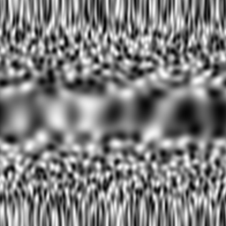
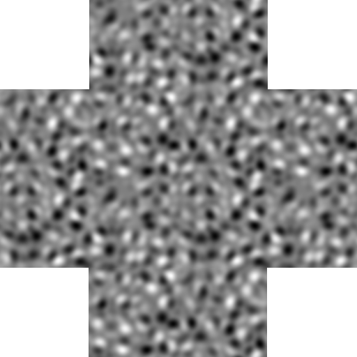
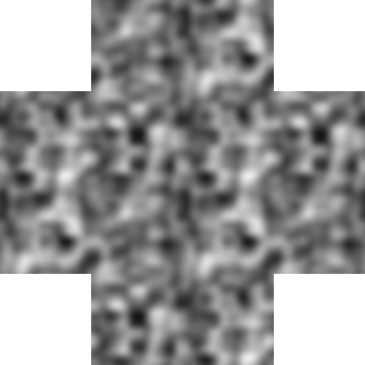
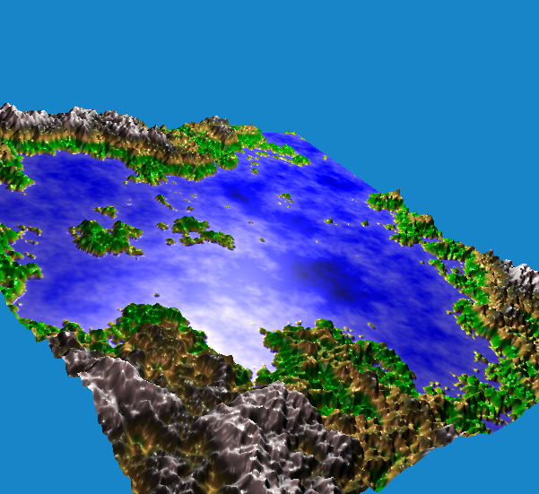

Nahtlos wiederholbare Rausch-Kacheln
Und wieder einmal habe ich mich in die Untiefen der Erzeugung von Daten begeben, die man mit einiger Toleranz als au der Ferne aufgenommene geographische Features bezeichnen könnte
Es ging dabei um Geländesegmente, die man nahtlos kacheln kann - die also sowohl vertikal als auch horizontal so aneinanderpassen, dass das menschliche Auge die Nahtstellen nicht erkennen kann.
Als Rauschalgorithmen benutzte ich Simplex- unf Perlin-Noise.
Um die nahtlose Wiederholbarkeit zu gewährleisten, ließ ich mich im Internet auf die Idee bringen, als Inhalt der Kachel einen Torus abzurolen und dessen Mantelfläche dann als Kachel zu benutzen. Das Ergebnis dieses ersten Versuches war nicht sehr erfolgreich:

Oberfläche eines Torus im dreidimensionalen Raum (Simplex-Noise) als KachelMan sieht hier schwere Verzerrungen - damit ist zwar das formulierte Ziel erreicht (man kann solche Kacheln tatsächlich nahtlos aneinanderfügen) - jedoch war das implizite Ziel, dass die Textur der Kachel gleichförmig ind isotrop aussehen sollte - bei dem vorliegenden Ergebnis ist jedoch ganz klar eine von der y-Koordinate abhängige Änderung des Spektrums zu erkennen.
Nach einigem Überlegen kam ich für mich zu der These, dass ein Torus nicht das Mittel der Wahl ist - Schneidet man einen solchen auf, ergibt sich eben genau kein Rechteck und das ist auch der Grund für die Verzerrungen. Im Internet fand ich eine weitere Erklärung, warum man diesen einfachen Ansatz zur Erzeugung nicht wählen sollte und dort auch gleich den Algorithmus für die Abbildung von vierdimensionalem Rauschen auf zwei Dimensionen. Die oben referenzierte Implementierung des Verfahrens nach Perlin reicht dafür nicht aus, aber glücklicherweise gibt es bei derselben Quelle auch eine vierdimensionale Implementierung.
Mit Perlin und Simplex-Noise ergeben sich mit dem Mapping von 4 auf 2 Dimensionen dann Kacheln, die sich nahtlos horizontal wie auch vertikal aneinanderfügen lassen, wie die beiden abschließenden Abbildungen bestätigen:

Anreihbare Kachel generiert mittels Simplex-Noise
Anreihbare Kachel generiert mittels Perlin-NoiseUnd natürlich lässt sich das Ergebnis dieser Algorithmen auch wieder als Rendering eines Auschnittes einer hypothetischen Planetenoberfläche darstellen:

Anreihbare Kachel generiert mittels Perlin-Noise und gerendert mittels Java3DArtikel, die hierher verlinken
Visualisierung von Höhenfeldern mittels Voxeln
08.10.2017
Nachdem ich in letzter Zeit mit Visualisierungsalgorithmen aus meiner Jugend und alternativen Visualisierungen für generierte Landschaften experimentiert habe, habe ich nunmehr beides gleichzeitig getan und den guten alten Voxel-Algorithmus wieder entstaubt.


Vor 5 Jahren hier im Blog
-
Seerosen falten
16.01.2016
Aus aktuellem Anlass rausgekramt: Seerosen Level 1 und 2: Level 1 - Servietten, Level2: relativ hartes Papier.
Weiterlesen...
Tags
Android Basteln C und C++ Chaos Datenbanken Docker dWb+ ESP Wifi Garten Geo Git(lab|hub) Go GUI Hardware Java Jupyter Komponenten Links Linux Markup Music Numerik PKI-X.509-CA Python QBrowser Rants Raspi Revisited Security Software-Test sQLshell TeleGrafana Verschiedenes Video Virtualisierung Windows Upcoming...
Neueste Artikel
-
 ZTerm als GitHub-Fork
ZTerm als GitHub-Fork
Ich habe vor vielen Jahren einmal einen VT100-Emulator in Java benötigt und fand ein Projekt, das genau dies umsetzte - allerdings waren alle Kommentare in einer mir nicht bekannten Sprache mit mir nicht bekannten Zeichen geschrieben.
Weiterlesen... -
Exportieren eines Reports im Textformat
Ich habe nach meinem letzten neuen Plugin für die sQLshell bereits wieder ein neues im Angebot - dieses Mal im Bereich Reporting
Weiterlesen... -
Renderer für generierte Dungeons mit Ansi-Steuercodes
Nachdem ich neulich mein AWK-Kochbuch um ein neues Rezept erweitert habe mit dem es möglich ist, einzelne Felder einer Datei regelbasiert mittels Ansi-Escape-Sequenzen unterschiedlich einzufärben, hat mich der Ansi-Steuercode-Virus wieder voll erwischt...
Weiterlesen...
Manche nennen es Blog, manche Web-Seite - ich schreibe hier hin und wieder über meine Erlebnisse, Rückschläge und Erleuchtungen bei meinen Hobbies.
Wer daran teilhaben und eventuell sogar davon profitieren möchte, muß damit leben, daß ich hin und wieder kleine Ausflüge in Bereiche mache, die nichts mit IT, Administration oder Softwareentwicklung zu tun haben.
Ich wünsche allen Lesern viel Spaß und hin und wieder einen kleinen AHA!-Effekt...
PS: Meine öffentlichen GitHub-Repositories findet man hier.